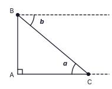
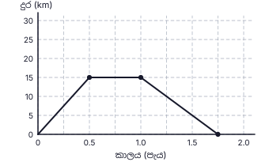
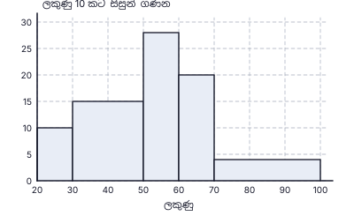
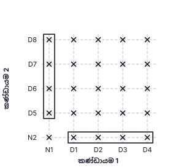
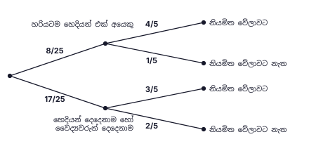

සටහන (ගුරුවරුන් සඳහා):
- A කොටස: එක් ප්රශ්නයකට ලකුණු 2 (නිවැරදි ක්රමයට ලකුණු 1, නිවැරදි පිළිතුරට ලකුණු 1). මුළු ලකුණු 50.
- B කොටස: එක් ප්රශ්නයකට ලකුණු 10. මුළු ලකුණු 50. සෑම පියවරකටම හිමි ලකුණු දකුණු තීරුවේ දක්වා ඇත.
- නිවැරදි විකල්ප ක්රමවලට සම්පූර්ණ ලකුණු ලබා දෙන්න. ප්රස්තාර සහ නිර්මාණවලින් කියවන අගයන් සඳහා සාධාරණ පරාසයක් පිළිගන්න (උදා: කුඩා කොටුවක අඩක් දක්වා).
A කොටස — පිළිතුරු
1. මුළු වැඩ ප්රමාණය = 12 × 20 = සේවක දින 240; දින 15කට අවශ්ය සේවකයින් = 240 ÷ 15 = 16; අමතරව අවශ්ය සේවකයින් = 16 − 12
අවසාන පිළිතුර: සේවකයින් 4 දෙනෙකු
(ලකුණු 2)2. E හරහා AB (හා CD) ට සමාන්තර රේඛාවක් ඇඳීමෙන්: AÊC = BÂE + EĈD (ඒකාන්තර කෝණ); BÂE = 95° − 40°
අවසාන පිළිතුර: 55°
(ලකුණු 2)3. කු.පො.ගු. = 12x: 10 + 9 − 612x = 1312x
අවසාන පිළිතුර: 1312x
(ලකුණු 2)4. ත්රිකෝණාකාර පාදම සහිත සෘජු ප්රිස්මයක මුහුණත් ත්රිකෝණ සහ සෘජුකෝණාස්ර වේ (සෘජුකෝණාස්රයක් සමචතුරස්රයක් විය හැක). සෘජුකෝණාස්රයක් නොවන සමාන්තරාස්රයක් මුහුණතක් විය නොහැක.
අවසාන පිළිතුර: (iii)
(ලකුණු 2)5. 20° ↔ පැකට් 30, එබැවින් 1° ↔ පැකට් 1.5; පරිප්පු සඳහා කෝණය = 360° − 180° − 20° = 160°; පරිප්පු පැකට් ගණන = 160 × 1.5
අවසාන පිළිතුර: පැකට් 240
(ලකුණු 2)6. ADBE වෘත්ත චතුරස්රයකි: AD̂B = 180° − 150° = 30°. C යනු AB හි මධ්ය ලක්ෂ්යය වන අතර DOC රේඛාව O හරහා යන බැවින් DC ⟂ AB වන අතර DC මගින් AD̂B සමච්ඡේදනය වේ: CD̂B = 30° ÷ 2
අවසාන පිළිතුර: 15°
(ලකුණු 2)7. 7(x² − 4) = 7(x² − 2²)
අවසාන පිළිතුර: 7(x + 2)(x − 2)
(ලකුණු 2)8. 5400 = 5.4 × 10³ ; lg 5400 = 3 + lg 5.4 = 3 + 0.7324
අවසාන පිළිතුර: 3.7324
(ලකුණු 2)9. B හරහා තිරස් රේඛාව AC ට සමාන්තර බැවින් ඒකාන්තර කෝණ සමාන වේ. a = ACB කෝණය (CA හා CB අතර); b = B හරහා තිරස් රේඛාව හා BC අතර කෝණය (රූපය බලන්න).

අවසාන පිළිතුර: a = b (රූපයේ a හා b නිවැරදිව ලකුණු කර ඇත)
(ලකුණු 2)10. වක්ර පෘෂ්ඨ වර්ගඵලය = 2πr × 7r = 14πr² ; පාදමේ වර්ගඵලය = πr² ; අනුපාතය = 14πr² : πr²
අවසාන පිළිතුර: 14 : 1
(ලකුණු 2)11. සම්භාව්ය ප්රතිඵල = 4 × 4 = 16; එකතුව 8: (2, 6), (6, 2), (3, 5), (5, 3) → ප්රතිඵල 4ක්; P = 4/16
අවසාන පිළිතුර: 14
(ලකුණු 2)12. BÂD = p යැයි ගනිමු. AB = BD නිසා BD̂A = p, එබැවින් බාහිර කෝණය DB̂C = 2p; BD = DC නිසා DĈB = 2p. ADC ත්රිකෝණයේ: p + 2p + 105° = 180° ⇒ p = 25°; x = 180° − 2(50°)
අවසාන පිළිතුර: x = 80°
(ලකුණු 2)13. A ∩ B = {3, 6}, A ∪ B = {1, 2, 3, 4, 6, 9}, n(B′) = 10 − 5 = 5; නිවැරදි වන්නේ (ii) පමණි.
අවසාන පිළිතුර: (ii)
(ලකුණු 2)14. (24a⁴b³) ÷ (8a²b)
අවසාන පිළිතුර: 3a²b²
(ලකුණු 2)15. r = (−12) ÷ (−24) = 12 ; T₄ = −6 ; T₅ = −3
අවසාන පිළිතුර: −3
(ලකුණු 2)16. BD̂C = BÂC = 35° (එකම ඛණ්ඩයේ කෝණ); AD̂C = 2 × 35° = 70°; CB̂E = AD̂C (වෘත්ත චතුරස්රයක බාහිර කෝණය)
අවසාන පිළිතුර: 70°
(ලකුණු 2)17. සංගුණකවල ම.පො.සා. = 3; p, q² හි අඩුම බලයන්
අවසාන පිළිතුර: 3pq²
(ලකුණු 2)18. πr²h = 1386 × h ⇒ r² = 1386 × 722 = 441
අවසාන පිළිතුර: r = 21 cm
(ලකුණු 2)19. මධ්ය ලක්ෂ්ය ප්රමේයය: DE ∥ BC, BC = 2 × DE = 30 cm; AB = 16 cm නිසා DB = 8 cm; AE² = 8² + 15² ⇒ AE = 17 cm එබැවින් EC = 17 cm; පරිමිතිය = 8 + 30 + 17 + 15
අවසාන පිළිතුර: 70 cm
(ලකුණු 2)20. අනුක්රමණය = 10 − 46 − 2 = 32 ; y − 4 = 32(x − 2)
අවසාන පිළිතුර: y = 32x + 1 (3x − 2y + 2 = 0)
(ලකුණු 2)21. AB ව්යාසයක් නිසා AD̂B = 90°; DÂB = BĈD = 56° (සමාන්තරාස්රයක ප්රතිමුඛ කෝණ); AB̂D = 180° − 90° − 56° = 34°; DB̂E = 180° − 34°
අවසාන පිළිතුර: 146°
(ලකුණු 2)22. පොලී අනුපාතිකය 8%: දෙවන වර්ෂයේ පොලිය = පළමු වර්ෂය අවසානයේ මුදලින් 8%, එබැවින් පළමු වර්ෂය අවසානයේ මුදල = 432 × 100 ÷ 8 = රු. 5400; P × 1.08 = 5400
අවසාන පිළිතුර: රු. 5000 (පරීක්ෂාව: 5000 × 1.08² = 5832)
(ලකුණු 2)23. CB = CD (අරයන්): CB̂D = (180° − 80°) ÷ 2 = 50°; AC ∥ BD: AĈB = CB̂D = 50° (ඒකාන්තර කෝණ); AÊB = ½ × AĈB
අවසාන පිළිතුර: 25°
(ලකුණු 2)24. 2x > 1 − 9 ⇒ 2x > −8 ⇒ x > −4
අවසාන පිළිතුර: −3, −2, −1
(ලකුණු 2)25. BÂC හි සමච්ඡේදකය සම්පූර්ණ කිරීම: දෙවන සලකුණු ලක්ෂ්යයෙන් සමාන අරයකින් ඇඳි චාපය පළමු චාපය හමුවන තෙක් ඇඳ, A හා එම ඡේදන ලක්ෂ්යය යා කරන්න (BÂO = 30°; AO මගින් BÂC සමච්ඡේදනය වේ). B හිදී AB මත සලකුණු කර ඇති ලක්ෂ්ය දෙකෙන් සමාන අරයකින් AB ට ඉහළින් හමුවන චාප ඇඳ B ට යා කරන්න: B හිදී AB ට ලම්බකය. සමච්ඡේදකය හා ලම්බකය හමුවන ලක්ෂ්යය O වේ (OB ⟂ AB). ලකුණු: නිර්මාණ සම්පූර්ණ කිරීමට 1; ඡේදන ලක්ෂ්යයේ O ලකුණු කිරීමට 1.

අවසාන පිළිතුර: O = A හි කෝණ සමච්ඡේදකයේ සහ B හි ලම්බකයේ ඡේදන ලක්ෂ්යය
(ලකුණු 2)B කොටස — පිළිතුරු සහ ලකුණු බෙදීම
ප්රශ්නය 1
| (i) |
| 1 − 16 = 56 | 1 |
| (ii) |
| වෙනත් වියදම් = 34 × 56 = 58 | 1 |
| ඉතිරි = 56 − 58 = 524 | 1 |
| (iii) |
| ලැබෙන මුදලින් 524 = රු. 40 000 ⇒ ලැබෙන මුදල = 40 000 × 245 = රු. 192 000 | 1 |
| ආහාර = 16 × 192 000 = රු. 32 000 ; වෙනත් වියදම් = 58 × 192 000 = රු. 120 000 | 1 |
| (iv) |
| ගෙවූ බද්ද = S − 192 000 (S = වැටුප) | 1 |
| S − 192 000 = 10100 (S − 120 000) | 1 |
| 100S − 19 200 000 = 10S − 1 200 000 ⇒ 90S = 18 000 000 ⇒ S = රු. 200 000 | 1 |
| (v) |
| 32 000200 000 × 100 | 1 |
| = 16 % | 1 |
මුළු ලකුණු: 10
ප්රශ්නය 2

| (a)(i) |
| (පැය 0.5, km 15) සිට (පැය 1.0, km 15) දක්වා තිරස් රේඛාව (මිනිත්තු 30ක් රැඳී සිටීම) | 1 |
| (පැය 1.0, km 15) සිට (පැය 1.75, km 0) දක්වා සරල රේඛාව (මිනිත්තු 45කින් ආපසු ඒම); රූපය බලන්න | 1 |
| (a)(ii) |
| වේගය = 15 km ÷ 34 h | 1 |
| = 20 km h−1 | 1 |
| (b)(i) |
| පරිමිතිය = AEB චාපය + AD + DC + CB (AB මායිමේ කොටසක් නොවේ): AD = CB = 11 cm, DC = 14 cm | 1 |
| AEB චාපය = 12 × 2 × 227 × 7 = 22 cm | 1 |
| පරිමිතිය = 22 + 11 + 14 + 11 = 58 cm | 1 |
| (b)(ii) |
| අර්ධ වෘත්තයේ වර්ගඵලය = 12 × 227 × 7 × 7 = 77 cm² | 1 |
| සෘජුකෝණාස්රයේ වර්ගඵලය = 14 × 11 = 154 cm² | 1 |
| 154 ÷ 77 = 2 ගුණයක් | 1 |
මුළු ලකුණු: 10
ප්රශ්නය 3
| (i) |
| වරිපනම් බදු = 14100 × 120 000 | 1 |
| = රු. 16 800 | 1 |
| (ii) |
| වාර්ෂික කුලිය = 15 000 × 12 = රු. 180 000 | 1 |
| නඩත්තුව = 10100 × 180 000 = රු. 18 000 | 1 |
| ඉතිරි = 180 000 − 16 800 − 18 000 = රු. 145 200 | 1 |
| (iii)(a) |
| කොටස් ගණන = 12 100 ÷ 5 | 1 |
| = 2420 | 1 |
| (iii)(b) |
| ආයෝජනය කළ මුළු මුදල = 2420 × 100 = රු. 242 000 | 1 |
| එකතු කළ අමතර මුදල = 242 000 − 145 200 = රු. 96 800 | 1 |
| 96 800242 000 × 100 = 40 % | 1 |
මුළු ලකුණු: 10
ප්රශ්නය 4
| ලකුණු | සිසුන් ගණන | ලකුණු 10 කට සිසුන් ගණන | සමුච්චිත සංඛ්යාතය |
|---|
| 20 – 30 | 10 | 10 | 10 |
| 30 – 50 | 30 | 15 | 40 |
| 50 – 60 | 28 | 28 | 68 |
| 60 – 70 | 20 | 20 | 88 |
| 70 – 100 | 12 | 4 | 100 |

| (i) |
| බහුඅස්රයෙන් කියවීම: 30 (පන්තිය 30 – 50) | 1 |
| 28 (පන්තිය 50 – 60) | 1 |
| 20 (පන්තිය 60 – 70) සහ 12 (පන්තිය 70 – 100) | 1 |
| (ii) |
| උස = සංඛ්යාතය ÷ පන්ති පළල × 10: 3020 × 10 = 15, 28, 20, 1230 × 10 = 4 | 1 |
| නිවැරදි පන්ති මායිම් (30 – 50, 50 – 60, 60 – 70, 70 – 100) මත, එකිනෙක ස්පර්ශ වන සේ තීර ඇඳීම | 1 |
| තීරවල උස 15, 28, 20, 4 නිවැරදිව ඇඳීම (කුඩා කොටුවක අඩක් දක්වා ඉඩ දෙන්න) | 1 |
| (iii) |
| සමුච්චිත සංඛ්යාතය: 40, 68, 88, 100 (සියල්ල නිවැරදි: ලකුණු 2; තුනක් නිවැරදි: ලකුණු 1) | 2 |
| (iv) |
| ලකුණු 50 හෝ ඊට වැඩි සිසුන් = 28 + 20 + 12 = 60 | 1 |
| සම්භාවිතාව = 60100 = 35 | 1 |
මුළු ලකුණු: 10
ප්රශ්නය 5


| (i) |
| සියලුම ප්රතිඵල 25 ඡේදන ලක්ෂ්යවල × ලකුණින් දැක්වීම (24ක් හෝ 23ක් නිවැරදි නම් ලකුණු 1) | 2 |
| (ii) |
| (N1 සමග D5, D6, D7, D8) ප්රතිඵල 4 සහ (D1, D2, D3, D4 සමග N2) ප්රතිඵල 4 වටා සංවෘත වක්ර: ප්රතිඵල 8ක් | 1 |
| n(E) = 4 + 4 = 8 | 1 |
| P(හරියටම එක් හෙදියක්) = 825 | 1 |
| (iii) |
| හෙදියන් දෙදෙනාම (1 × 1 = 1) හෝ වෛද්යවරුන් දෙදෙනාම (4 × 4 = 16): 1725 ; පළමු අදියරේ ශාඛා 825, 1725 | 1 |
| “නියමිත වේලාවට නැත” සඳහා අනුපූරක 15 හා 25 | 1 |
| දී ඇති අගයන් 45 හා 35 නිවැරදි ශාඛාවල ලිවීම (රුක් සටහන බලන්න) | 1 |
| (iv) |
| P(නියමිත වේලාවට නැත) = 825 × 15 + 1725 × 25 | 1 |
| 8125 + 34125 = 42125 | 1 |
මුළු ලකුණු: 10